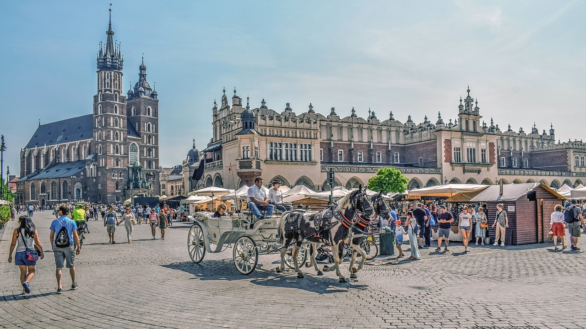

Hiszpania 🇪🇸 to kraj, w którym życie płynie wolno. To ojczyzna sjesty, idealna dla smakoszy, nocnych marków, miłośników historii, pielgrzymów religijnych i każdego, kto nie spieszy się zbytnio z czymkolwiek!
Jest to rozległy kraj pełen różnorodności: Madryt i Barcelona to tętniące życiem, nowoczesne miasta, Granada zachwyca mauretańskim klimatem, Walencja ma swój niepowtarzalny charakter, Katalonia wyróżnia się własnym językiem i kulturą, a region Basków na północy Hiszpanii sprawia wrażenie, jakbyś trafił do zupełnie innego państwa.
Dodatkowym atutem jest to, że Hiszpania jest niezwykle przystępnym cenowo miejscem na podróż. Od ponad dekady odwiedzam ten kraj i nigdy nie wydaję majątku. Zwiedzanie na budżecie jest tutaj bardzo łatwe.
Ten przewodnik pomoże Ci zaplanować podróż, zaoszczędzić pieniądze i maksymalnie wykorzystać czas w tym barwnym i pełnym energii kraju.
Top 5 rzeczy do zobaczenia i zrobienia w Hiszpanii

1.
Zachwyć się Barceloną
Barcelona słynie z niekończących się imprez, późnych kolacji i historycznych uliczek. Jeśli pokochasz nocny styl życia, poczujesz się tu jak w domu. Nie przegap Museu d’Història de la Ciutat — to jedno z najlepszych muzeów w Europie, zawierające największe rzymskie wykopaliska poza Rzymem. Inne atrakcje to Muzeum Picassa (Museu Picasso), gdzie możesz podziwiać około 5 tysięcy dzieł artysty; imponująca Bazylika Sagrada Família, jeden z najbardziej znanych budynków autorstwa Gaudíego; dzielnica Barri Gòtic (Dzielnica Gotycka) z krętymi uliczkami idealnymi do spacerów; oraz Parc del Laberint d’Horta, najstarszy zielony teren Barcelony z rzeczywistym labiryntem.
2.
Poznaj historię Granady
Granada to jedno z moich ulubionych miast w Hiszpanii. To miejsce, gdzie kultura, architektura i wpływy Afryki Północnej oraz Europy łączą się w unikalny sposób. Żadna podróż na południe Hiszpanii nie jest kompletna bez wizyty w Alhambrze, wpisanej na listę UNESCO mauretańskiej twierdzy i pałacu z XIII wieku. Warto też zobaczyć Fajalauza — fabrykę ceramiki działającą od 1517 roku. W Granadzie znajdują się również piękne klasztory i katedry, takie jak Klasztor San Jeronimo z bujnymi krużgankami i wspaniałą kaplicą (5 EUR). Nie zapomnij obejrzeć pokazu flamenco (zwykle kosztuje około 20 EUR) i odwiedzić mauretańską herbaciarnię, by spróbować słodkiej miętowej herbaty.
3. Przemierzaj Madryt
Madryt, stolica Hiszpanii, słynie z muzeów, tapas i nocnego życia. Podobnie jak w Barcelonie, życie nocne trwa tu do rana, co daje możliwość spokojnego zwiedzania miasta rano, gdy ulice są jeszcze puste. Koniecznie odwiedź Museo del Prado, jedno z największych muzeów sztuki na świecie, oraz Pałac Królewski, największy pałac w Europie Zachodniej z niemal 3,5 tysiąca pokoi. Inne atrakcje to Świątynia Deboda (egipska świątynia z II wieku p.n.e.), park El Retiro (wpisany na listę UNESCO), Plaza Mayor — główny plac miasta z XV wieku oraz targ El Rastro w każdą niedzielę, gdzie znajdziesz odzież, biżuterię i inne skarby.
4. Zanurz się w La Tomatina
La Tomatina to niezwykła, godzinna bitwa na pomidory, która przyciąga około 20 tysięcy osób do małego miasteczka Buñol (liczącego zaledwie 9 tysięcy mieszkańców). Festiwal, który rozpoczął się w 1945 roku, odbywa się w ostatnią środę sierpnia, a podczas wydarzenia rzucanych jest ponad 160 ton pomidorów. Bitwa zaczyna się po wystrzale z armatki wodnej i kończy dokładnie po godzinie. To jedna z najbardziej niesamowitych i chaotycznych imprez, jakie widziałem! (Wskazówka: warto nocować w Walencji, gdzie jest więcej opcji noclegowych).
5. Odkryj Sewillę
Sewilla to niezwykłe miasto pełne wspaniałych kościołów i zabytkowych pałaców, będące największym miastem w Andaluzji. Szczególnie podobała mi się dzielnica żydowska (Barrio de Santa Cruz) z białymi domami i Alcázarem, najstarszym rezydencjonalnym pałacem w Europie, który nadal jest użytkowany (pochodzi z XIV wieku). Z wieży La Giralda, będącej częścią Katedry w Sewilli, rozpościera się panorama całego miasta. Nie zapomnij odwiedzić Metropol Parasol — nowoczesnej konstrukcji przypominającej gigantyczny grzyb na placu Encarnación (spacer po podwyższonej ścieżce kosztuje od 10 EUR). Sewilla słynie również z tańca flamenco, więc koniecznie zobacz pokaz, jeśli masz okazję.
1.
Odpoczynek na Costa del Sol
Zrelaksuj się na plaży i ciesz się spokojnym stylem życia, z którego słynie Hiszpania. Ten fragment południowego wybrzeża jest znany z pięknych plaż, życia nocnego i… mnóstwa turystów. Niemniej jednak to świetne miejsce, aby skosztować pysznego jedzenia w nadmorskich restauracjach (region słynie z pescaito frito — smażonej ryby), spróbować sportów wodnych w przejrzystym Morzu Alborańskim, napić się koktajli o zachodzie słońca i odpocząć na urokliwych plażach. Choć Malaga to popularny wybór, lepsze miejsca znajdziesz trochę dalej, jak plaża El Bajondillo z białym piaskiem czy okolice plaży La Carihuela, pełne doskonałych restauracji z owocami morza. Aby uniknąć tłumów, wybierz się poza sezonem — pogoda wciąż będzie ciepła, ale ludzi będzie znacznie mniej.
2.
Zobacz Walencję
Walencja to fascynujące miasto. Początkowo nie przyciągało mnie niczym szczególnym — odwiedziłem je głównie jako bazę na festiwal pomidorowy w Buñol. Jednak z czasem miasto mnie oczarowało. Walencja, będąca kiedyś rzymską kolonią i stolicą Hiszpanii, ma wyjątkową paellę (zamiast owoców morza, wykorzystuje kurczaka, królika i fasolę), świetny klub piłkarski (Valencia CF) oraz niesamowity Mercado Central — targ mieszczący się w imponującym budynku z kopułą przypominającą katedrę. Połączenie historycznych uliczek i futurystycznych muzeów (np. muzeum poświęcone "oświeceniu i nowoczesności") oraz nadmorskiej promenady pełnej tapas sprawia, że Walencja to idealne miejsce na spokojny przystanek między bardziej tętniącymi życiem miastami.
3.
Przejdź Camino de Santiago
Camino de Santiago, czyli Droga św. Jakuba, to jedna z najpopularniejszych tras pielgrzymkowych na świecie. Najczęściej wybierana trasa francuska prowadzi od granicy z Francją aż do Santiago de Compostela w północno-zachodniej Hiszpanii. Trasa ma około 800 km i zajmuje około miesiąca. Najlepszym czasem na wędrówkę są maj-czerwiec lub wrzesień-październik. Jeśli nie masz tyle czasu, możesz wybrać krótszy odcinek trasy, by poczuć atmosferę pielgrzymki i odkryć mniej uczęszczane zakątki Hiszpanii..
4. Zwiedzanie wysp
Hiszpania ma jedne z najpiękniejszych wysp w Europie. W szczycie sezonu (lipiec i sierpień) są zatłoczone i drogie, dlatego warto odwiedzić je wiosną lub jesienią. Gran Canaria to raj dla miłośników plaż, surfingu i wędrówek, a także rezerwat biosfery UNESCO. Dla fanów imprez Ibiza jest obowiązkowym punktem, a dla miłośników natury polecam Teneryfę z Parkiem Narodowym Teide i najwyższym szczytem Hiszpanii. Na Majorce znajdziesz turkusowe wody i średniowieczną architekturę, a na La Palmie możesz podziwiać nocne niebo w jednym z rezerwatów gwiazd. Promy na wyspy kursują z Barcelony i Walencji, a w zimie ich liczba jest ograniczona.
5. O
dwiedź Gibraltar
Gibraltar, terytorium zamorskie Wielkiej Brytanii, znajduje się na południowym krańcu Hiszpanii. Znany jako "Skała" dzięki wysokiemu, 426-metrowemu wapiennemu wzgórzu, które dominuje nad krajobrazem. Można wjechać na szczyt kolejką linową lub wspiąć się po historycznych stopniach śródziemnomorskich. Gibraltar oferuje piękne widoki na Europę i Afrykę, unikalną faunę (w tym jedyne dziko żyjące małpy w Europie) oraz atrakcje takie jak Jaskinia św. Michała. To małe terytorium, ale z wystarczającą liczbą atrakcji na krótką wizytę.

Hiszpania jest dość przystępna cenowo. Chociaż ceny noclegów w dużych miastach turystycznych wzrosły w ostatnich latach, inne wydatki wciąż pozostają na rozsądnym poziomie. Każde miasto ma swoje własne sposoby na oszczędzanie, ale oto kilka ogólnych wskazówek, jak podróżować po Hiszpanii, nie wydając fortuny:
1.
Zamów menu dnia
Większość restauracji oferuje tanie i sycące "menu dnia" (menu del día) na lunch w cenie około 10–15 EUR na osobę. To doskonały sposób na skosztowanie pysznego hiszpańskiego jedzenia w przystępnej cenie. Wino lub woda są zazwyczaj wliczone w cenę. Szukaj miejsc, które są oblegane przez miejscowych – to znak, że jedzenie jest dobre.
2.
Ciesz się darmowymi tapas
W niektórych miastach, takich jak Granada, można znaleźć bary, które oferują darmowe tapas, gdy zamówisz napój. Warto skakać między barami, aby zaoszczędzić na jedzeniu, jednocześnie popijając napój.
3.
Zatrzymaj się u lokalnych mieszkańców
Couchsurfing to świetny sposób na zaoszczędzenie na noclegach i jednocześnie poznanie lokalnej kultury. W większych miastach jest więcej ofert, ale pamiętaj, aby zarezerwować miejsce z wyprzedzeniem, ponieważ najwięksi turyści chętnie korzystają z tej opcji.
4.
Wybierz podróżowanie autobusem
Chociaż system kolei jest szybki, to również drogi, szczególnie pociągi dużych prędkości, które są znacznie droższe od autobusów. Jeśli masz więcej czasu i chcesz zaoszczędzić, wybierz autobus. Podróż będzie dłuższa, ale zdecydowanie tańsza. Zarezerwuj bilety online i z wyprzedzeniem – możesz zaoszczędzić jeszcze więcej.
5.
Kup bilet turystyczny
Większość dużych miast oferuje karty turystyczne, które obejmują wstęp do muzeów, atrakcji turystycznych oraz transport publiczny. Karty takie jak Madrid City Card (od 8,40 EUR) czy Malaga–Costa del Sol Sightseeing Pass (od 14 EUR) mogą zaoszczędzić ci pieniądze, szczególnie jeśli planujesz odwiedzić najważniejsze atrakcje
6.
Korzystaj z roweru
W miastach takich jak Madryt czy Sewilla możesz wypożyczyć publiczne rowery na dzień lub tydzień za niewielką opłatą. W Barcelonie system rowerów miejskich (Bicing) jest dostępny tylko dla mieszkańców, ale wciąż znajdziesz wiele sklepów, które oferują wynajem rowerów na krótki okres.
7.
Skorzystaj z BlaBlaCar
Ta aplikacja łączy podróżujących z kierowcami, którzy mają wolne miejsca w swoich samochodach. Jest to świetny sposób na podróżowanie między miastami, poznanie ciekawych ludzi i uniknięcie zatłoczonych pociągów i autobusów. To jedna z moich ulubionych metod podróżowania na średnie i długie dystanse.
8.
Zabierz ze sobą butelkę na wodę
Woda z kranu w Hiszpanii jest bezpieczna do picia, więc warto zabrać ze sobą wielorazową butelkę, aby oszczędzać pieniądze i zmniejszać zużycie plastiku. W Hiszpanii pojawia się coraz więcej fontann i stacji do napełniania butelek, co ułatwia życie podróżującym. LifeStraw to moja ulubiona marka, ponieważ ich butelki mają wbudowane filtry, które zapewniają czystość i bezpieczeństwo wody.
Dzięki tym prostym wskazówkom możesz jeszcze bardziej cieszyć się swoją podróżą po Polsce, nie martwiąc się o budżet!
1. Transport publiczny
W Hiszpanii w wielu dużych miastach transport publiczny jest dobrze rozwinięty. Madryt i Barcelona posiadają nowoczesne systemy metra, które są szybkie, choć mogą być zatłoczone w godzinach szczytu. W miastach takich jak Sewilla, Walencja czy Bilbao znajdziesz mniejsze, ale efektywne sieci transportu, w tym również tramwaje. Bilety na jedną podróż kosztują średnio od 1,50 do 2,50 EUR, a dla osób planujących intensywne korzystanie z metra, bilety dzienne mogą być bardziej opłacalne – ich ceny wahają się od 8 do 15 EUR.
2. Autobusy
Jeśli chcesz zaoszczędzić na podróżach między miastami, autobus to najbardziej budżetowa opcja. Firmy takie jak FlixBus oferują bilety już od 6 EUR, a podróże są komfortowe, z dostępem do Wi-Fi oraz gniazdek elektrycznych. Podróż z Madrytu do Barcelony (około 9 godzin) kosztuje średnio 35 EUR, a z Sewilli do Granady (4 godziny) około 25 EUR. Alsa to kolejna popularna firma, która obsługuje wiele tras w kraju.
3. Pociągi
Pociągi w Hiszpanii, zwłaszcza RENFE, oferują wygodne i szybkie połączenia. Pociągi dużych prędkości, mimo że droższe, pozwalają na szybkie dotarcie do celu – na przykład z Madrytu do Barcelony w zaledwie 2,5 godziny. Ceny biletów w zależności od terminu i klasy biletowej mogą wynosić od 55 EUR w przypadku pociągów szybkich. Czas przejazdu z Madrytu do Sewilli to około 2,5 godziny, a z Madrytu do Walencji – niecałe 2 godziny. Więcej informacji na temat cen i tras znajdziesz na platformach takich jak Trainline.Jeśli planujesz podróże po całej Europie, rozważ zakup Eurail Pass, który oferuje elastyczne połączenia z wieloma krajami i umożliwia korzystanie z kolei w przystępnej cenie.
4. Loty
Jeśli masz mało czasu, tani lot między miastami to wygodna opcja. Większość tanich linii lotniczych oferuje atrakcyjne ceny, zwłaszcza na trasach takich jak Madryt – Barcelona (około 65 EUR). Jednak warto pamiętać, że tanie linie lotnicze mają wiele ukrytych opłat, takich jak koszt bagażu czy wyboru miejsca, co może podnieść cenę. Dodatkowo podróż na lotnisko i przez kontrolę bezpieczeństwa sprawiają, że podróż samolotem nie zawsze jest szybsza od pociągu.
5. Wynajem samochodu
Wynajem samochodu to dobra opcja, jeśli chcesz zwiedzić Hiszpanię w swoim tempie. W ofercie znajdziesz samochody już od 25 EUR dziennie, ale pamiętaj, by upewnić się, czy samochód jest z automatyczną skrzynią biegów. Przed wynajmem samochodu sprawdź wymagania dotyczące prawa jazdy międzynarodowego, ponieważ jest to konieczne do wynajmu. Najlepsze oferty znajdziesz na stronach takich jak Discover Cars.
6. Autostop
Jeśli czujesz się odważny, możesz spróbować autostopu – Hiszpania jest jednym z krajów, gdzie ta forma podróży jest uważana za bezpieczną. Choć znalezienie odpowiednich kierowców może być trudniejsze, niektóre osoby podróżujące w ten sposób chwalą sobie doświadczenia. Więcej informacji o autostopie i wskazówki znajdziesz na stronach takich jak HitchWiki.
Hiszpania to kraj pełen kontrastów, od tętniących miast po malownicze plaże i góry. Warto korzystać z tanich opcji transportu, jak autobusy i BlaBlaCar. Hiszpańska kuchnia, w tym tapas, jest smaczna i tania, a atrakcje turystyczne, takie jak Camino de Santiago czy zabytki w Barcelonie i Madrycie, dostarczą niezapomnianych wrażeń. Z kartami turystycznymi można zaoszczędzić na zwiedzaniu.
This site was created with the Nicepage